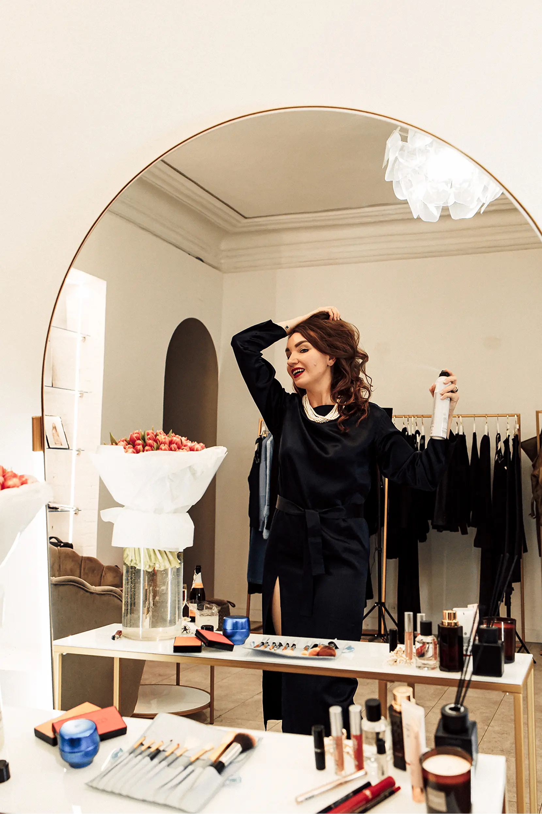
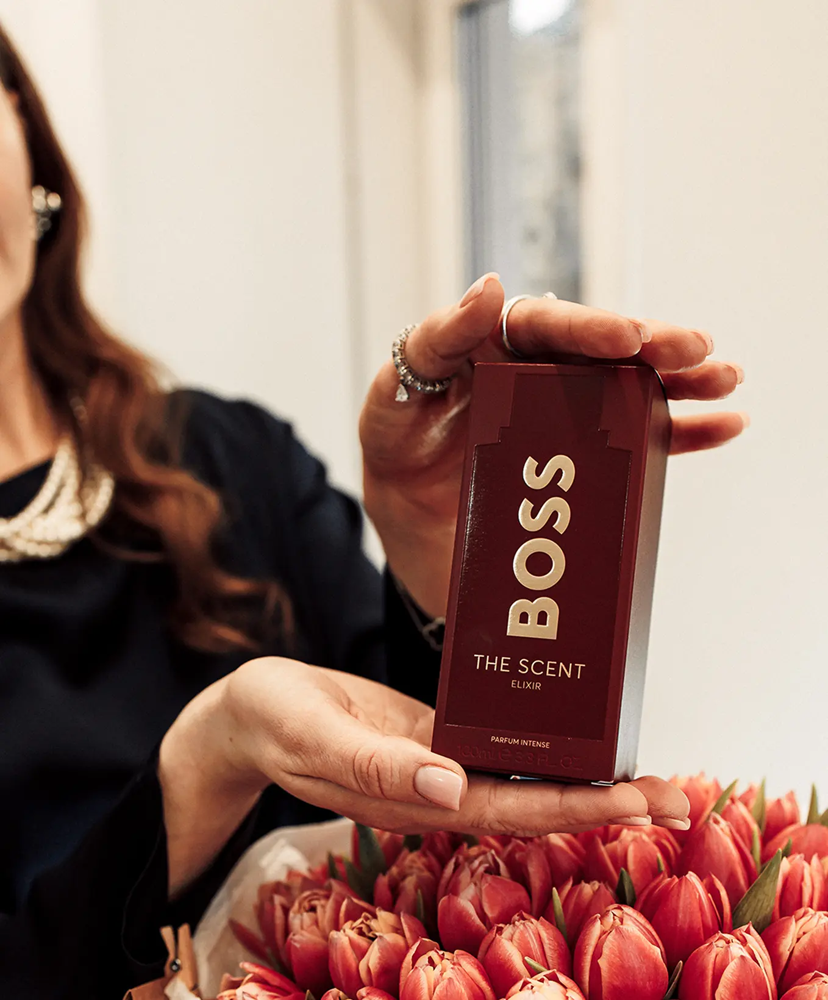

Романтика починається з нот аромату
Романтична вечеря при свічках, неспішна прогулянка під зоряним небом чи теплі обійми вдома – кожен обирає свій спосіб святкування. Головне – це атмосфера щирості, любові й бажання зробити цей день особливим.
А наша героїня, блогерка Аліса Дікалова, з трепетом готується до вечора, який вона планує провести разом із коханим у затишному ресторані.
Як дівчина-блогерка готується до найважливішого вечора року
День святого Валентина – це не лише свято кохання, але й символ тепла, ніжності та турботи, які ми даруємо одне одному. Це день, коли у повітрі відчувається особлива магія, а серця наповнюються очікуванням чогось прекрасного.
Сьогодні День святого Валентина став нагадуванням про те, як важливо приділяти увагу близьким і створювати незабутні моменти разом.

Магія аромату
Аліса вірить, що аромат має силу викликати спогади та емоції.
Для особливого дня вона обирає той, що найкраще підкреслить її індивідуальність, – парфумовану воду Inspiration Olfactive Mandarine Solaire з колекції новинок сезону від BROCARD.
Легкі цитрусові ноти з теплим морським відлунням. Коли вона вдихає його, відчуває захоплення першого кохання.
Але для Аліси важливо, щоб не лише її образ, а й весь простір навколо мав свою атмосферу. Вона обирає парфумовану свічку Esteban Légendes d'Orient , яка розкривається глибокими східними нотами.
Легка свіжість лимонної вербени переплітається з квітковою ніжністю гвоздики, а тепла амбра та глибокий сандал додають аромату м'якої вишуканості.
Мерехтливе світло свічки й насичений аромат створюють атмосферу затишку, спокою й тонкої інтриги.
парфумована свічка Esteban Légendes d'Orient
переглянутиАромат – це не просто невидимий аксесуар, а щось значно більше.
Він може пробудити спогади, змінити настрій і навіть додати впевненості. Коли я вдихаю легкі цитрусові ноти з теплим морським відлунням, мені здається, що вечір обіцяє бути сповненим чарівних моментів.
Це запах очікування, трепету, легкого хвилювання перед зустріччю… Я знаю: саме цей аромат зробить мою появу незабутньою.
Макіяж, що закохує
Аліса не приховує: макіяж для неї – це більше, ніж просто косметика. Це справжній ритуал, що дарує впевненість і особливий настрій.
Вона прагне створити природний, але водночас вишуканий образ, який підкреслить її риси та дозволить почувати себе комфортно, легко, впевнено і трішки загадково протягом всього вечора.
Щоб підготувати шкіру, вона починає з улюбленого крему Shiseido Bio-Performance Skin HiForce.
Його ніжна текстура тане на шкірі, ніби огортаючи її невидимою вуаллю зволоження та сяйва. Це як полотно для її подальшого мистецтва.
Крем Shiseido Bio-Performance Skin HiForce
переглянутиПраймер Shiseido Revitalessence Skin Glow
переглянутиНаступний крок – новий праймер Shiseido Revitalessence Skin Glow, що створює відчуття шовковистої гладкості й глибоко зволожує та готує шкіру до рівномірного нанесення тонального засобу.
Вона ніжно розподіляє його по обличчю, помічаючи, як шкіра ніби оживає, стає більш рівною та доглянутою.
Для тонального покриття Аліса обирає легку, але стійку основу Naj Oleari Blooming BB Foundation SPF15.
Її текстура нагадує ніжний серпанок – непомітний, але такий, що додає здорового сяйва. Вона наносить її тонким шаром, розтушовуючи подушечками пальців, щоб відчути, як воназливається зі шкірою.
Основа Naj Oleari Blooming BB Foundation SPF15
переглянутиЩоб надати обличчю свіжість, вона наносить кілька крапель кремових рум’ян TheBalm Talk is Cheek Blush – вони ніби легке відображення ранкового рум’янцю.
Рум’яна TheBalm Talk is Cheek Blush
переглянутиДля сяйва додає хайлайтер TheBalm Liquid Highlighter, який створює ефект природного сяйва, підкреслюючи вилиці та даруючи здоровий блиск.
Хайлайтер TheBalm Liquid Highlighter
переглянутиRevlon ColorStay Line Creator
переглянутиОчі – її особлива фішка. Витончені стрілки створює за допомогою Revlon ColorStay Line Creator, яка має ультрастійку формулу, дозволяючи насолоджуватися ідеальним макіяжем очей увесь вечір.
А туш Isadora The Build-Up дарує віям екстремальний об’єм і легкість.
Туш Isadora The Build-Up
переглянутиКремові тіні для повік Isadora The Shimmer Eyeshadow Stick в зручному форматі додадуть ніжного сяйва, підкресливши природну глибину погляду.
Revlon ColorStay Line Creator
переглянутиКонтурний олівець Artdeco Soft Lip Liner
переглянутиНа губах – водостійний контурний олівець Artdeco Soft Lip Liner, який створює чітку форму губ. Та помада Artdeco Perfect Color у яскравому відтінку. Її оксамитова текстура приємно лягає на губи.
Для завершального штриху вона використовує фіксатор Artdeco Magic Fix, щоб її образ залишався бездоганним протягом усього вечора.
Помада Artdeco Perfect Color
переглянутиФіксатор Artdeco Magic Fix
переглянутиДля мене макіяж – це не просто про красу, а про стан душі.
Це ритуал, який допомагає відчути себе особливою, створює правильний настрій і налаштовує на щось більше. Коли я наношу ніжну основу, додаю легкий рум’янець і створюю виразні стрілки, то відчуваю, як з’являється впевненість.
Це не маска, а спосіб розповісти світу про себе без слів. Адже в кожній деталі – від легкого сяйва хайлайтера до відтінку помади – закладена частинка мого настрою і внутрішнього відчуття гармонії.
Гра з локонами
Образ не буде завершеним без зачіски. Їй хочеться легких, природних хвиль, які додадуть жіночності, але не виглядатимуть надто старанними. Аліса знає, що гарне укладання починається з правильної підготовки волосся, адже саме від неї залежить його здоровий вигляд і стійкість зачіски.
Підготовка волосся
Щоб захистити волосся від високих температур під час укладання, вона використовує Alfaparf Semi Di Lino Style Care Thermal Protector.
Цей спрей забезпечує надійний термозахист, захищаючи волосся від перегріву та ламкості. Крім того, він зволожує, додає блиску та запобігає електризації, що робить локони більш доглянутими й шовковистими.
Перш ніж приступити до створення локонів, вона:
Очищує волосся – використовує легкий шампунь та кондиціонер для зволоження й живлення.
Наносить спрей Alfaparf Semi Di Lino Style Care Thermal Protector – розпилює засіб рівномірно по всій довжині, особливу увагу приділяючи кінчикам.
Просушує волосся феном, використовуючи прохолодний або теплий режим, щоб мінімізувати вплив гарячого повітря.
Створення локонів
- Розділення волосся – Аліса ділить волосся на кілька секцій, щоб зробити укладання рівномірним.
- Використання стайлера – за допомогою плойки створює легкі хвилі, закручуючи пасма у різних напрямках для більш природного ефекту.
- Фіксація зачіски – наносить мінімальну кількість лаку або спрею для укладки, щоб зберегти легкість та рухливість локонів.
Спрей Alfaparf Semi Di Lino Style Care Thermal Protector
переглянути

Зачіска – це як продовження мого настрою.
Я люблю, коли локони виглядають природно, немов торкнувся легкий вітерець, а не годинами створював ідеальну форму. Мій головний принцип – зачіска має бути не просто красивою, а комфортною.
Я хочу відчувати себе легко, невимушено, щоб жоден порив вітру не змусили мене хвилюватися про ідеальність кожного пасма.
Тому для мене важливо правильно підготувати волосся, захистити його і водночас зберегти живий, здоровий вигляд. Адже справжня краса – це не жертви, а гармонія із собою.
Образ у деталях: аксесуари та впевненість
Жоден образ не буде завершеним без деталей, які додають йому індивідуальності та особливого шарму. Аксесуари не лише доповнюють стиль, а й допомагають створити гармонійний та завершений вигляд.
Від вибору сукні до витончених прикрас – кожен елемент відіграє важливу роль у створенні атмосфери впевненості та елегантності.
Аліса обирає аксесуари, що підкреслюють її природну красу та надають образу завершеного вигляду, створюючи баланс між вишуканістю та комфортом.
Мені завжди здається, що образ – це як полотно, і саме аксесуари наносять останні штрихи, які роблять його довершеним.
Вони можуть бути невеликими, непомітними, але їхній вплив неможливо заперечити. Сережки, що вловлюють світло, ніжний браслет або витончена каблучка – це не просто прикраси, а спосіб підкреслити настрій, зробити образ особливішим. І найголовніше – найкращий аксесуар, який можна мати, це впевненість у собі. Бо саме вона робить будь-який образ бездоганним.
Аромат почуттів: ідеальний подарунок для нього
Останній штрих – подарунок коханому.
Аліса хоче не лише отримувати приємні емоції цього вечора, а й дарувати їх.
Парфуми Hugo Boss Boss The Scent Elixir
переглянути
Вона ретельно обирає подарунок для свого коханого, бажаючи підкреслити його стиль та індивідуальність. Її вибір зупиняється на
парфумах Hugo Boss Boss The Scent Elixir.
Цей амбровий, деревний аромат є справжнім втіленням чоловічої елегантності та харизми. У його звучанні поєднуються чуттєва лаванда, теплий сандал і пряний піменто, створюючи глибокий, насичений та витончений шлейф.
Його тепла і спокуслива композиція огортає впевненістю та додає привабливості. Саме такий аромат стане ідеальним подарунком для чоловіка, який знає собі ціну та впевнено рухається вперед.

Я завжди обираю подарунки з думкою про людину, для якої вони призначені.
Для мене важливо, щоб це був не просто предмет, а щось, що викликає емоції, залишає слід у пам’яті. Аромат – це одна з найчуттєвіших речей, яка може передавати тепло, нагадувати про моменти, прожиті разом.
Коли я обирала парфуми для коханого, уявляла, як цей аромат буде супроводжувати його щодня, як він асоціюватиметься з нашим вечором, нашими спільними спогадами.
І мені хочеться, щоб щоразу, коли він відчуватиме цей аромат, перед його очима поставав не просто флакон парфумів, а образ мене, усміхненої, щасливої, у той самий особливий вечір.
День святого Валентина – це не лише про романтичну вечерю, а й про увагу до деталей, які створюють чарівну атмосферу. Маленькі ритуали допомагають не лише виглядати,
а й почуватися особливою. Адже справжня романтика починається з любові до себе та бажання дарувати тепло близьким людям.
-30%
До речі, у Brocard триває святкова акція:
до 14 лютого у мобільному застосунку, на сайті та в магазинах мережі Brocard отримайте знижку -30% на улюблені товари та підготуйтеся до Дня закоханих із задоволенням!